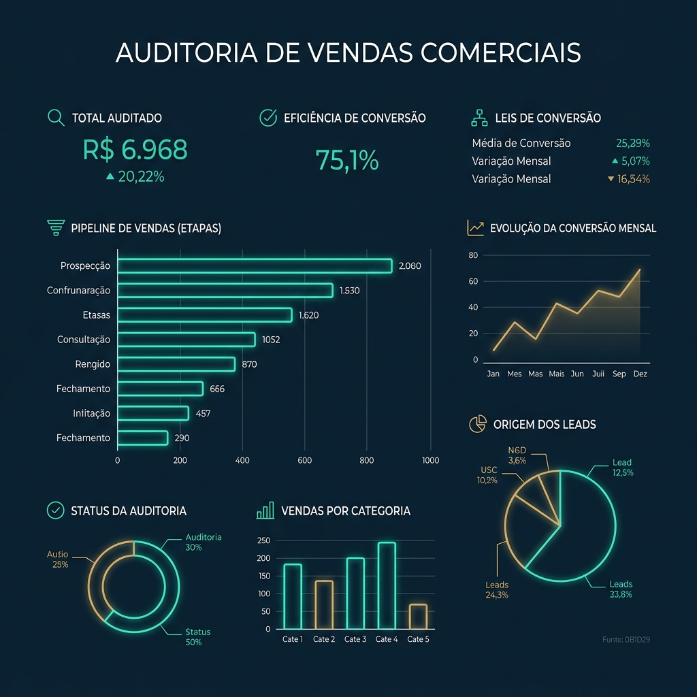

A AuditCom identifica os gargalos que limitam o crescimento da sua operação comercial e entrega um plano executivo baseado em indicadores, evidências e prioridades de alto impacto. Desloque suas decisões de opiniões para fatos.

Toda auditoria estratégica é conduzida e estruturada sobre quatro pilares fundamentais da operação comercial B2B.
Avaliamos a geração de demanda ativa, os critérios de qualificação de leads, as taxas de conversão de entrada e a previsibilidade real do funil comercial.
Analisamos a abordagem prática do time, qualidade dos discursos, contorno de objeções, cadências de follow-up e disciplina na negociação.
Auditamos rituais de liderança, higiene e parametrização do CRM, governança operacional, metas de curto prazo e estrutura de tomada de decisão.
Mensuramos a retenção de clientes, taxas de churn (cancelamento), rotinas de onboarding, planos de expansão e a saúde financeira da carteira ativa.
Durante a Avaliação Executiva da AuditCom, analisamos de forma aprofundada mais de 80 pontos críticos da sua operação.
Índice de Maturidade Comercial da AuditCom que serve como ativo de avaliação técnica para a operação de empresas e fundos de investimento.
Ausência total de processos, dependência exclusiva de indicações, vazamento de caixa ativo e falta de previsibilidade comercial.
Flutuação de faturamento comercial, equipe dependente de heróis, CRM maquiado e CAC financeiro desalinhado.
Processos comerciais catalogados, rituais periódicos no CRM e análise de forecast com baixa margem de erro.
Playbooks validados, automação de aquisição rodando, previsibilidade total de funil e controle estrito sobre churn e CS.
Garantimos que todas as recomendações de transformação comercial não dependam de opiniões pessoais, seguindo critérios técnicos consolidados.
Todo diagnóstico é baseado estritamente na análise de históricos reais de CRM e gravação de ligações do time comercial.
Medição matemática das taxas de eficiência, custos e tempos de contrato da operação (Win Rate, CAC, LTV).
Mapeamento monetário direto indicando exatamente onde estão os maiores gargalos e qual a projeção de perdas mensais.
As ações de correção são listadas com base na projeção real de retorno sobre o investimento executado pelo cliente.
Matriz de prioridade avaliando a facilidade de adoção das melhorias pela equipe interna da empresa auditada.
Definição das metas prioritárias divididas cronologicamente para evitar desvio operacional da liderança.
Processo em etapas estruturado para medir, organizar e acelerar os resultados da operação.
Coleta rigorosa de evidências, rotinas e relatórios.
Pontuação de maturidade com base no Audit Score™.
Matriz de urgência para as correções imediatas.
Construção dos Manuais Departamentados de ajuste.
Execução assistida e governança das recomendações.
Acompanhamento de conformidade dos novos scores.
Rigor Técnico Garantido: Se você receber o laudo de diagnóstico e a matriz de riscos e julgar que o mapeamento de processos não reflete a realidade das evidências e chamadas comerciais auditadas, devolvemos 100% do seu investimento.
Liderança comercial e técnica por trás do diagnóstico e governança da sua empresa.
Especialista em Gestão Comercial B2B, análise de performance corporativa e governança em operações complexas de vendas de campo e tecnologia.
Especialista em estruturação de processos comerciais B2B, playbooks de condução de vendas, scripts de fechamento e conformidade de pipeline.
Especialista em Customer Success, rotinas de passagem de bastão (handover), controle de taxas de churn e inteligência de base ativa de clientes.
Em um Assessment Executivo de 90 minutos direto com o Danilo — que coordenou e realizou mais de 150 auditorias de vendas —, nós abriremos o seu funil, revisaremos o seu CRM e mapearemos os riscos da sua prospecção.